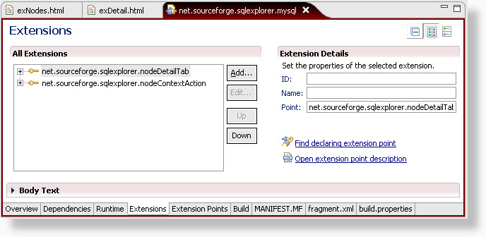
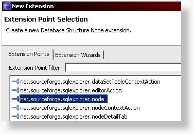
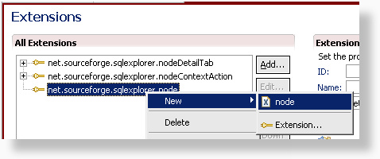
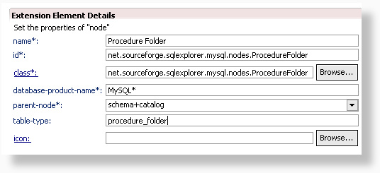
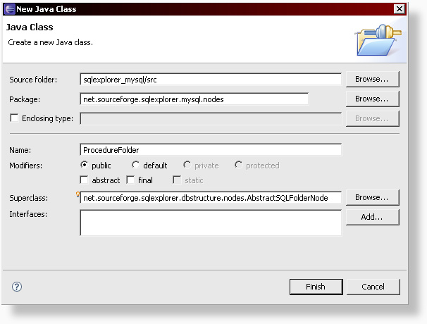
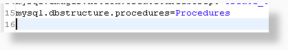
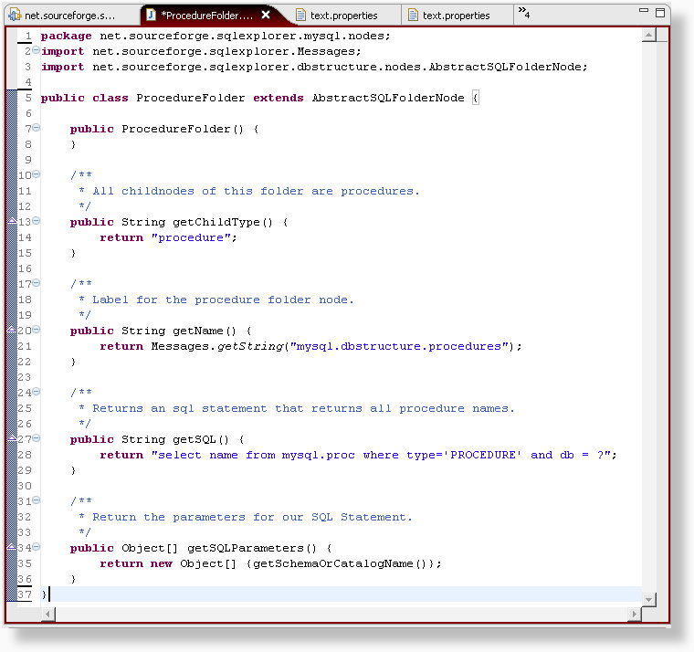
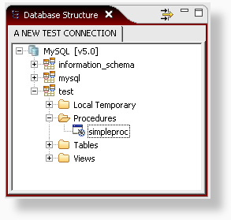

Eclipse SQL Explorer provides the 'net.sourceforge.sqlexplorer.node' extension point, which allows you to create new nodes in the database structure view.
There are 3 different classes you can extend to create a new node:
In this tutorial, we'll create a new Procedures folder node for the MySQL database.
Step 1: Assuming that you've already created a fragment project, open the fragment.xml and go to the extensions tab. We haven't used this extension point yet, so we need to add it first using the 'Add' button.

Step 2: Select the net.sourceforge.sqlexplore.node extension point.

Step 3: Right click the extension point and create a new node.

Step 4: This is where we define the most important details for our new extension point.
In the name field, we have to provide a name for this node.
This name is only used to make it easy to identify your node. Let's
call this new node the Procedure Folder node.
As the id, we'll use the same name as our class name to make sure the
node id is unique.
It makes sense to keep all node extensions together in one package, so
we'll name our new procedure folder class
net.sourceforge.mysql.nodes.ProcedureFolder.
In the database product name field, we specify that this node is only
available for MySQL databases.
We want this node to appear on the same level as the tables node, so we
select 'schema+catalog' as the parent node.
Every node needs to have a type identifier and in this case, since it
is a folder that contains procedures, we'll give it the type
procedure_folder. The type identifier can be used later on to add new
actions specifically for this node type.
If we had an icon available for the procedures, we could select one in
the Icon field. Note that for any classes that extend AbstractFolder or
AbstractSQLFolder, the icon is not used for the folder node, but for
the childNode instead.
Once we've entered all information, we can generate our new class by
clicking on the class link.

Step 5: Change the super class to AbstractSQLFolderNode.

Step 6: Once the class is generated, we create a new entry in our text.properties file to hold the label for our procedure node.

Step 7: Update the methods of the generated class. The image says it all..

All we have to do now is save everything and run SQL Explorer with our new extension. Here's the end result.
